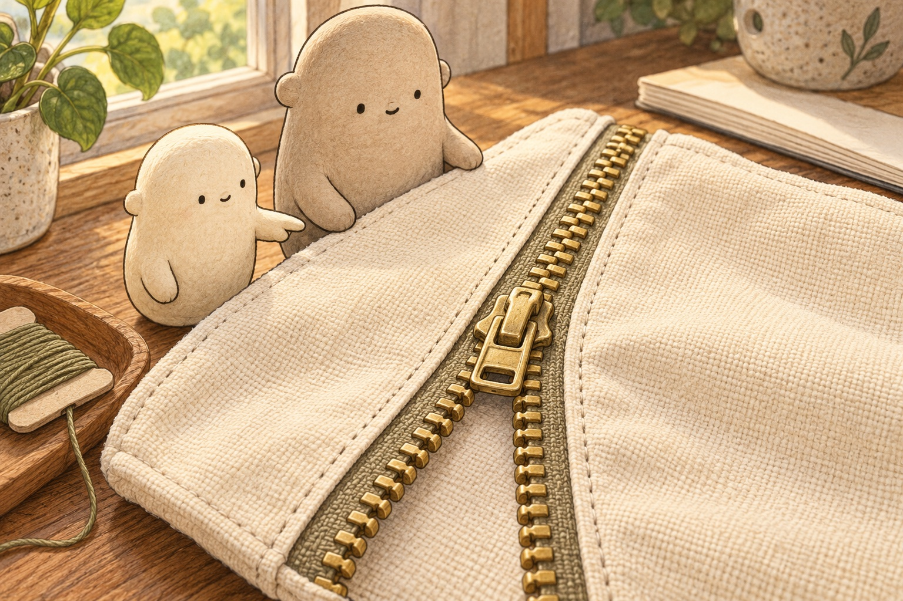
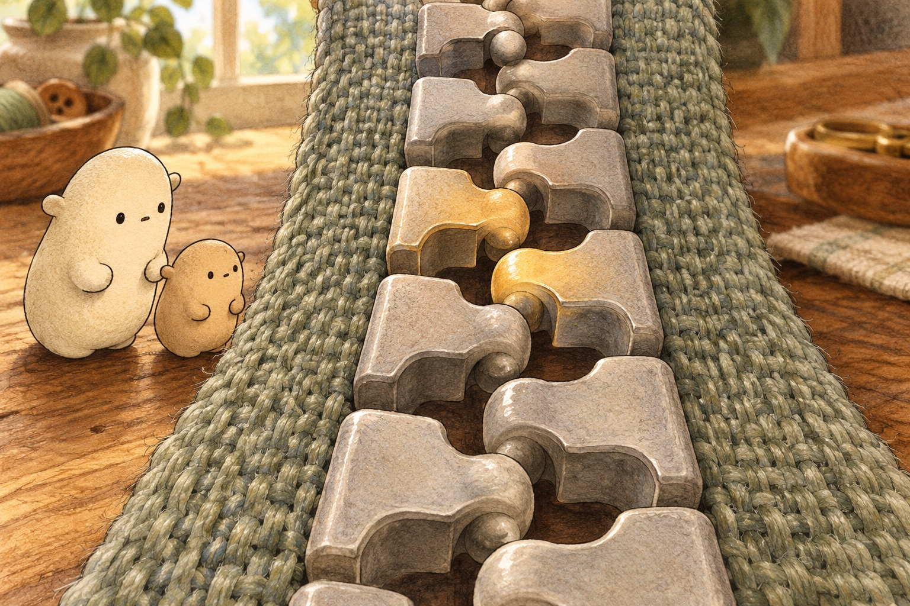
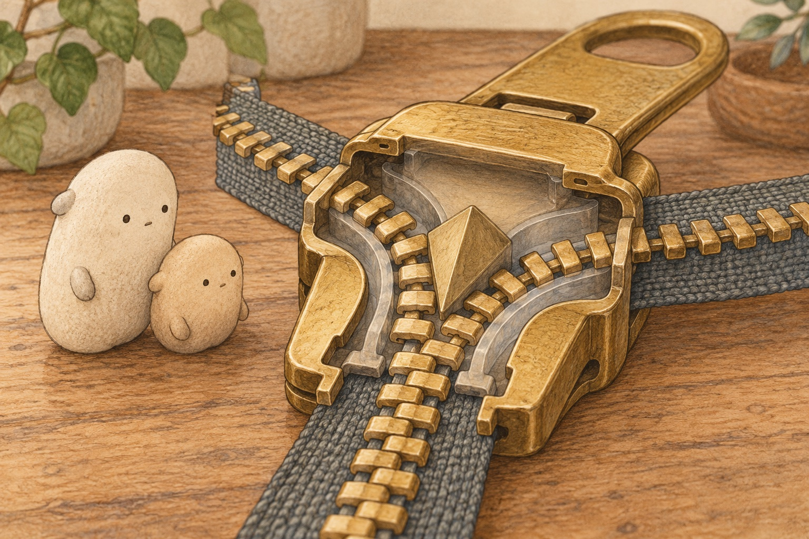
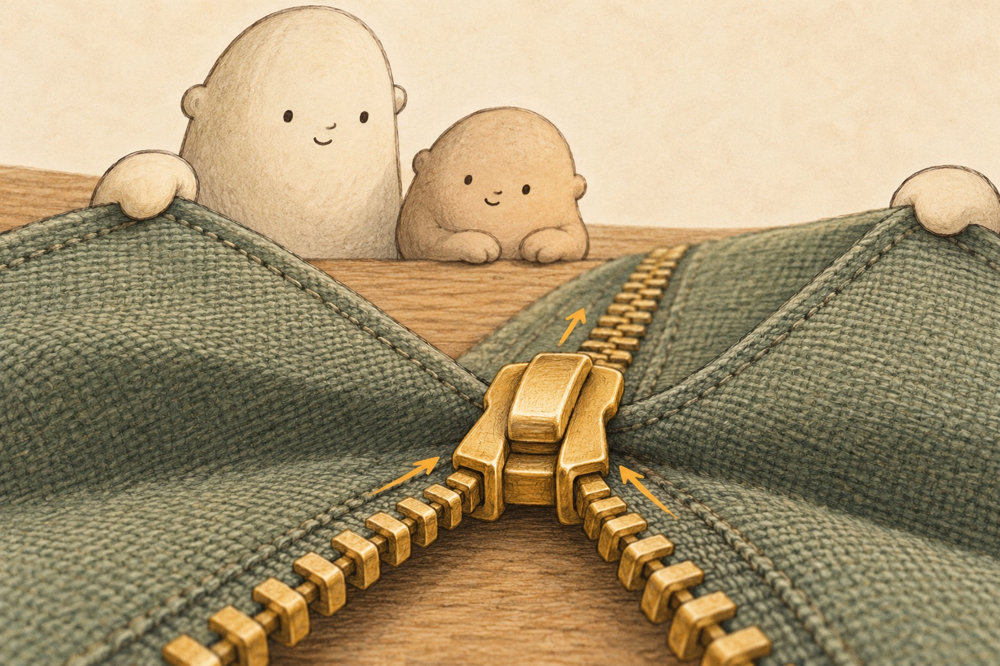
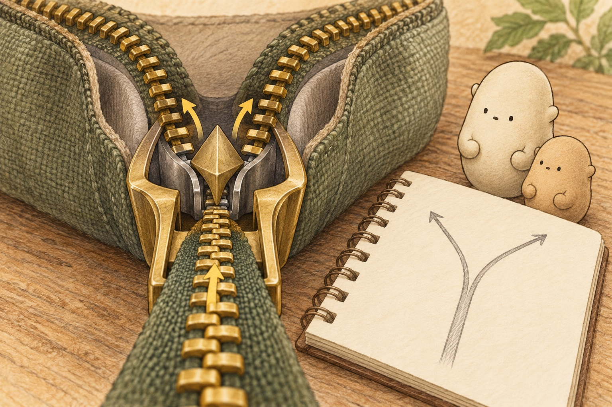
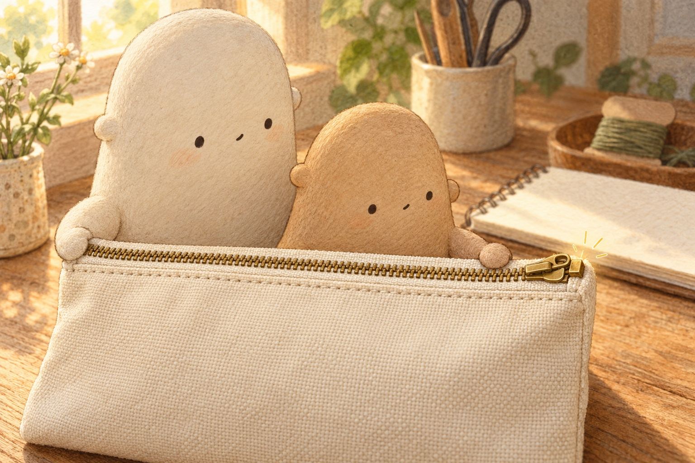

Follow the slider
A boundary that moves
Little Wonderer found the place where the pouch changed. Below the slider, two rows of zipper teeth stood apart. Above it, they made one joined row. The boundary moved whenever the slider moved. “So the slider must be doing something inside,” Little said.
What evidence shows that the slider changes the two rows?

A bump and a pocket
Up close, each zipper tooth was really a shaped element. A rounded bump on one element fitted into a pocket on the other side. The elements alternated left, right, left, right. Interlock means to fit together so connected shapes hold one another in place.
How does an alternating pattern help the elements interlock?

A hidden Y-shaped path
The cutaway revealed a channel shaped like the letter Y. Two wide paths curved around a center wedge, then met at one narrow path. As the slider traveled upward, its angled walls nudged both tooth rows inward. The slider was a moving guide, not a row of teeth itself.
Why does the channel need two entrances and one exit to close the zipper?

One click after another
Little followed the slider slowly. Its channel lined up one element from the left, then one from the right. Bump met pocket. The next pair followed. Many tiny interlocks formed one flexible zipper chain behind the slider. The slider did not pull the teeth straight across; it curved them into place.
How does the curved path make closing different from pulling the rows straight together?

The wedge separates
Then Little moved the slider back. The joined row entered the narrow end. Inside, the center wedge steered one side left and the other side right. The bumps slipped out of their pockets along the curved paths. The same Y-shaped channel worked in reverse to open the pouch.
What changes when the joined row meets the center wedge?

Click at the stop
Little closed the pouch once more. The last elements nested, and the slider met the top stop with a neat click. The stop kept it from sliding off the teeth. Two rows had become one strong, bendable seam. Little looked at a jacket zipper. “Is the same hidden Y inside that one too?”
Why are both the shaped elements and the top stop needed?
For a complete still story, download the foldable book.
A zipper clicks together.
How can one slider join two rows of tiny teeth?
Where shall we look?
What changes right where the slider sits?
Below the slider are two separate rows. Above it is one joined row.
A little explanation & something to try
The slider does not glue the sides. It guides matching zipper teeth into an interlocking pattern.
Try this. Trace each open row toward the slider, then follow the single closed row away from it.
Why are zipper teeth shaped with bumps and pockets?
A bump on one side settles into a pocket on the other side.
A little explanation & something to try
Alternating teeth nest across the gap. Their shapes help the two rows hold together.
Try this. Point to one left tooth, then the right tooth that fits beside it.
What path is hiding inside the slider?
Two wide channels curve toward one narrow opening, like the arms of a Y.
A little explanation & something to try
The slider's Y-shaped channel bends both rows inward in the right order.
Try this. Draw a Y in the air. Bring two fingertips down its arms and out together.
How can the same slider open the zipper again?
Moving the other way sends the joined row toward the fork in the channel.
A little explanation & something to try
The center wedge guides the interlocked teeth apart and sends each row out a different side.
Try this. Trace the joined row toward the fork, then split your fingers along two paths.
Compare the tooth rows
Use these zipper-design counts. Compare each pair or round one count to the nearest ten.
Choose two zipper counts in your home. Estimate by rounding each count to the nearest ten; do not count teeth while a zipper is moving.
1. One sample zipper has 38 elements along a pocket. Another has 46. Put >, <, or = in the circle. Which is the greater count?
38 ○ 46
A small hint
Compare the tens first. If the tens match, compare the ones.
2. A long bag zipper has 72 elements. A short pouch zipper has 27. Put >, <, or = in the circle. Which is the greater count?
72 ○ 27
A small hint
Look at the tens digits before the ones digits.
3. A zipper design gives the left tape 54 elements and the right tape 54 elements. Put >, <, or = in the circle. What shared count do the matching rows have?
54 ○ 54
A small hint
When both tens and ones match, use the equal sign.
4. A design note lists 43 zipper elements. What is 43 rounded to the nearest ten?
43 → nearest ten: ___
A small hint
43 lies between 40 and 50. Look at the ones digit.
5. Another zipper design lists 67 elements. What is 67 rounded to the nearest ten?
67 → nearest ten: ___
A small hint
67 lies between 60 and 70. A ones digit of 5 or more rounds up.
6. A long zipper design lists 95 elements. What is 95 rounded to the nearest ten?
95 → nearest ten: ___
A small hint
A ones digit of exactly 5 rounds up to the next ten.
Give the mechanism your words.
Choose a scene. Look, say an idea, then draw or write.
At the boundary, …what is separate and what is joined?
The teeth hold because …how do the bumps and pockets fit?
Inside the slider, …what does the Y-shaped channel guide?
Draw the slider's Y-shaped path. Add arrows to show two rows becoming one.
SAY IT FIRST. THEN DRAW OR WRITE.
A temporary space. Copy your words before closing or reloading; they are not saved or sent.
elementsliderchannelinterlockwedgebecausehowever
Read your words aloud. Did you connect a shape to its job with because, so, or however?